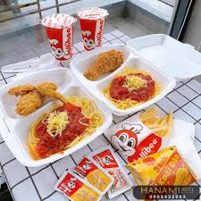

20 món ăn vặt hot nhất hiện nay mà bạn không nên bỏ qua
Nếu bạn là tín đồ của những món ăn vặt hấp dẫn thì hãy cùng Bách hóa XANH điểm qua 20 món ăn vặt hot nhất hiện nay mà bạn không nên bỏ qua, dù chỉ 1 món.
Bánh tráng trộn, khoai lang lắc, da heo chiên giòn,... Đây được xem là những món ăn vặt điển hình được nhiều người yêu thích. Mỗi món ăn vặt thu hút nhiều người bởi hương vị hấp dẫn, giá cả lại rất phải chăng. Do đó, hôm nay hãy cùng Bách hóa XANH chọn ra 20 món ăn vặt hot nhất hiện nay mà bạn không nên bỏ qua, dù chỉ 1 món nhé!
1. Bánh Tráng Trộn

Món ăn vặt nổi tiếng, mang hương vị đặc trưng và đa dạng topping.
2. Trứng Gà Nướng
Đặc sản đường phố thơm ngon, hấp dẫn vào những ngày mát trời.
3. Chè Ba Màu
Món chè vừa đẹp mắt vừa ngon miệng với ba lớp màu sắc hấp dẫn.
4. Xoài Lắc
Xoài tươi được lắc đều với gia vị và chua ngọt vừa phải.
5. Bánh Bao Chiên
Bánh bao nhân thịt chiên giòn, rất ngon và dễ ăn.
6. Kem Xôi
Kem dẻo kết hợp cùng xôi mềm, tạo nên món ăn lạ miệng, hấp dẫn.
7. Takoyaki
Món bánh ball Nhật Bản với nhân mực tươi ngon.
8.Cá Viên Chiên Mắm
Cá viên chiên giòn, phủ mắm cay nồng đặc trưng.
9. Mì Cay
Mì sợi dai, kết hợp cùng nước dùng cay nồng, rất thích hợp cho mùa lạnh.
10. Ốc Xào Bơ Tỏi
Ốc được xào với bơ và tỏi, mang đến hương vị đậm đà, thơm ngon.
11. Cháo Quẩy
Món cháo thơm ngon ăn kèm quẩy giòn rụm.
12. Bánh Xèo Mini
Bánh xèo nhỏ, vỏ giòn, nhân đầy đủ với tôm và thịt.
13. Bánh Chuối Nướng
Bánh chuối thơm nức, mềm mịn và ngọt ngào.
14. Dừa Lắc
Trái dừa tươi được lắc với nhiều gia vị tạo nên hương vị độc đáo.
15. Bánh Mì Chảo
Bánh mì ăn kèm với chảo trứng ốp la và thịt nguội.
16. Bắp Rang Bơ
Bắp rang được phủ bơ và muối, một món ăn vặt đơn giản nhưng ngon miệng.
17. Gà Rán
Gà chiên giòn, ăn kèm sốt mật ong hoặc gia vị cay.
18. Cơm Cháy
Cơm cháy giòn rụm, ăn kèm với thịt kho, rất hấp dẫn.
19. Tàu Hũ Nóng
Tàu hũ nóng mịn màng ăn kèm siro và thạch đen.
20. Sữa Chua Trái Cây
Sữa chua kết hợp với trái cây tươi, tạo nên món ăn thanh mát, dễ chịu.